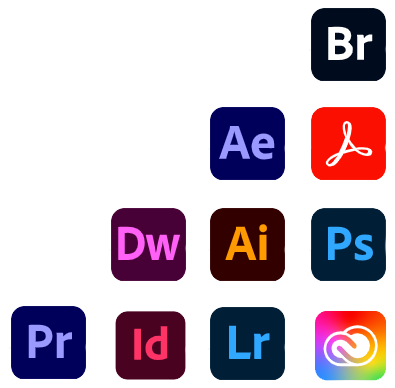

About Me
Over the course of several years, I have diligently honed my professional skills, building a diverse technical expertise in programming, design, and marketing. This has enabled me to assist numerous companies in establishing and enhancing their online presence and brand awareness. By leveraging business analytics, I craft effective marketing strategies to attract a larger customer base for the products or services I work with.
With a solid decade of experience in digital and operations strategy, I have successfully executed various tasks such as creating and curating media content, managing websites and social media campaigns, and handling media buys. My commitment to delivering exceptional customer experiences has led to the growth of thriving communities, repeat customers, and a steady influx of new clients.
Notably, I have played a key role in planning and producing promotional materials for local and international expos and tradeshows, contributing significantly to the success of these events.
My proficiency in managing social media platforms for businesses, including Facebook, Instagram, Twitter, LinkedIn, and Hootsuite, allows me to excel in content creation and day-to-day marketing campaign management. I also excel in maintaining online calendars, capturing travel and event photography, and skillfully editing videos.
Technical Skills:

• HTML/CSS
• Content Management Systems (WordPress, SharePoint)
• E-commerce platforms (Shopify, Square, Wix)
• Google Analytics
• Adobe Creative Suite
• SEO/SEM
• Google Ads, Meta Ads
• Google Analytics
• Email Marketing
• Photography and video editing
• Project Management
For nearly two decades, British Columbia has been my cherished home, and I am deeply passionate about this beautiful region. I am eager to share my love for BC with others, inviting them to experience the wonders it has to offer. Whether it's the breathtaking landscapes, the rich culture, or the diverse outdoor activities, I take great delight in introducing people to the magic and allure of this place I proudly call home.
During my free time, I take a great pleasure in embarking on journeys with my family. Feel free to visit my travel page for more details.